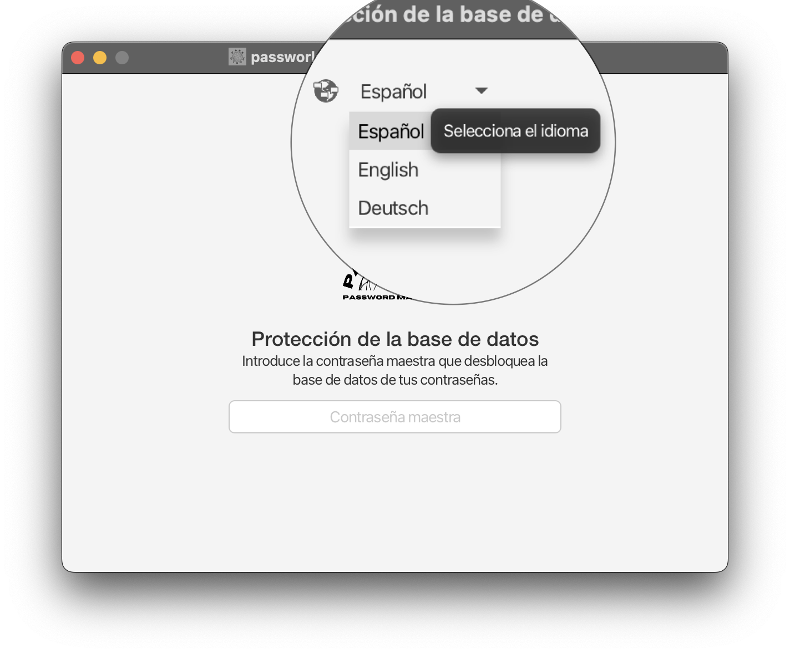
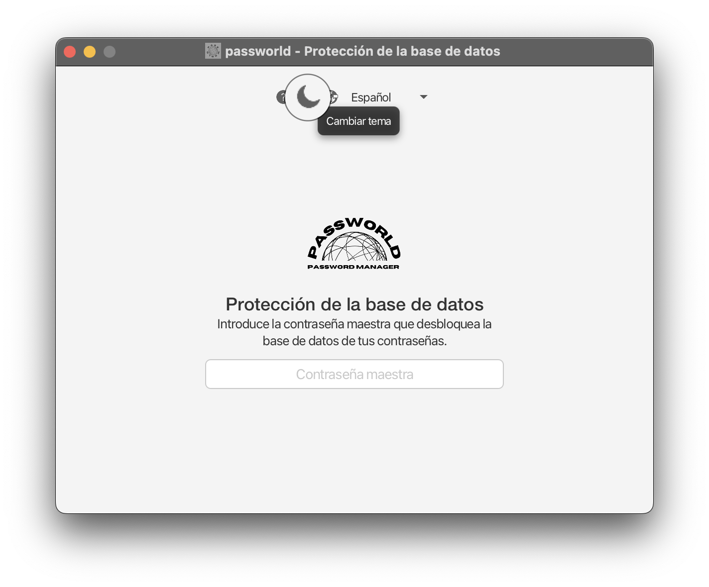
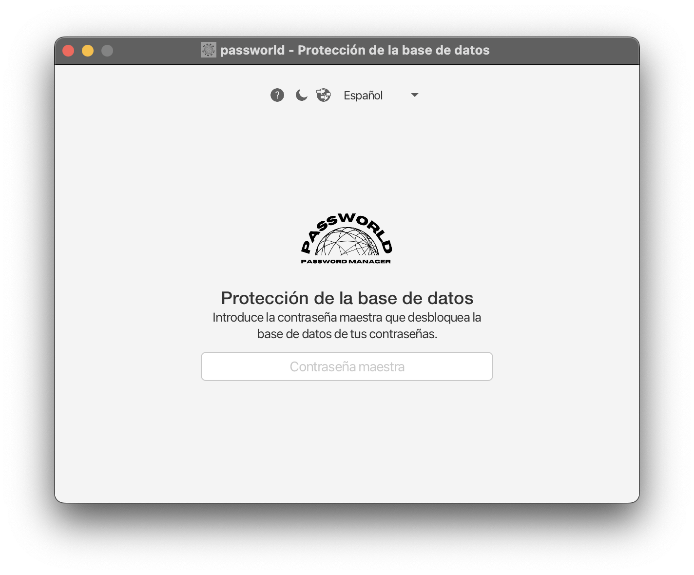
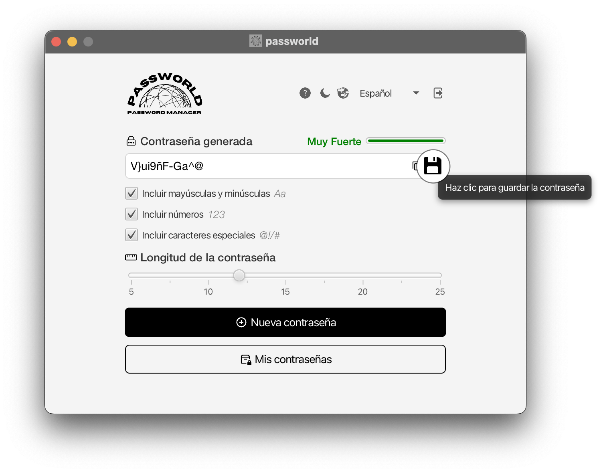
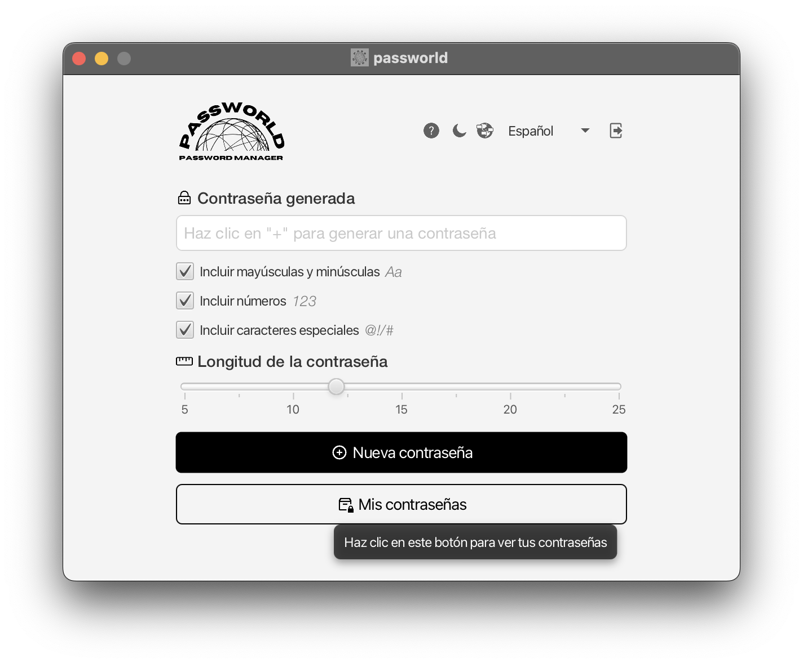
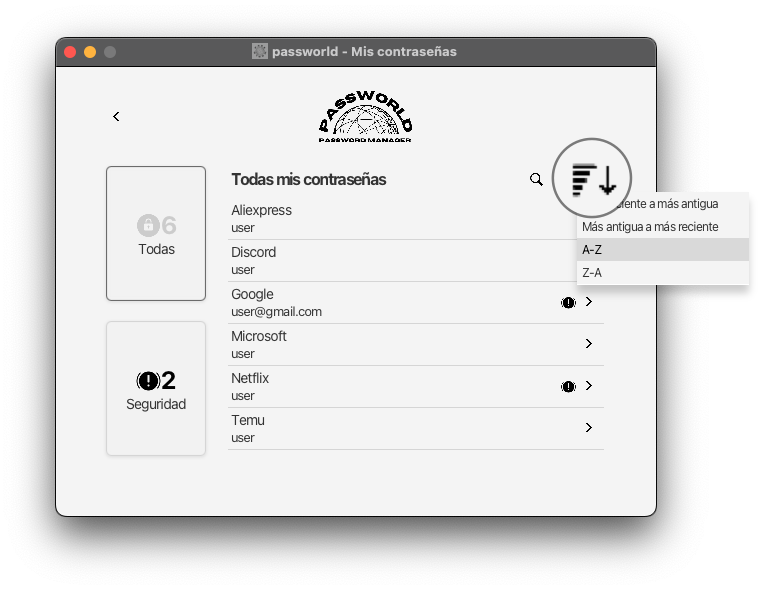

Iniciar Sesión
Para iniciar sesión necesitarás conocer los siguientes datos:
- Correo electrónico con el que creaste tu cuenta
- Contraseña de tu cuenta
Bastará con introducir los datos requeridos y pulsar el botón.

Registrarse
Para registrarte necesitarás aportar los siguientes datos:
- Correo electrónico
- Contraseña de tu cuenta
- Contraseña maestra del baúl (requerida para consultar tus contraseñas)
Bastará con introducir los datos requeridos y pulsar el botón.

Cambiar idioma
Para cambiar el idioma debes hacer clic sobre el desplegable que encontrarás en la parte superior de Passworld en la mayoría de ventanas
Una vez desplegado, selecciona el idioma que desees y se aplicará automáticamente.
Ten en cuenta que el desplegable podría no aparecer en todas las ventanas de la aplicación.
Cambiar tema
Para cambiar el tema debes hacer clic sobre botón de luna o sol que encontrarás en la parte superior de Passworld en la mayoría de ventanas
Ten en cuenta que el botón podría no aparecer en todas las ventanas de la aplicación.
Protección del baúl
Para desbloquear el baúl debes introducir la contraseña maestra que estableciste al registrarte.
Si no recuerdas la contraseña, no podrás acceder a tus contraseñas almacenadas y deberás contactar a soporte.
Generar contraseña personalizada
Para generar una contraseña personalizada debes hacerlo desde la ventana principal
Puedes personalizar las características de la contraseña que se generará.
La contraseña por defecto contendrá al menos una letra mayúscula, una minúscula, un número, un caracter especial y 12 caracteres de longitud.

Copiar contraseña generada desde la ventana principal
Para copiar una contraseña generada desde la ventana principal bastará con pulsar el botón correspondiente.
También podrás pulsar el la combinación de teclas CTRL+C en Windows/Linux o CMD+C en MacOS.

Guardar contraseña generada desde la ventana principal
Para guardar una contraseña generada desde la ventana principal bastará con pulsar el botón correspondiente
También podrás pulsar el la combinación de teclas CTRL+G en Windows/Linux o CMD+G en MacOS
A continuación, aparecerá un cuadro de diálogo para establecer algunos datos relacionados con la contraseña:
- Descripción (obligatorio): Debes establecer un identificador para la contraseña
- Usuario (opcional): Puedes establecer un nombre de usuario o correo electrónico asociado a la contraseña
- URL (opcional): Puedes establecer una URL para la plataforma asociada a la contraseña
- Contraseña (obligatorio): Podrás ver, modificar o regenerar la contraseña generada que vas a guardar
Una vez establezcas los datos que quieras guardar junto a la contraseña, pulsa sobre el botón "Guardar" para guardarla
Si no quieres guardar la contraseña, puedes pulsar el botón "Cancelar" para volver a la ventana principal

Ver mis contraseñas
Para ver tus contraseñas bastará con pulsar el botón correspondiente.
Una vez pulsado el botón podrás consultar todas tus contraseñas guardadas.
Las contraseñas que presenten un icono de advertencia a la derecha tienen problemas de seguridad sin resolver.

Listar todas mis contraseñas
Para listar todas tus contraseñas bastará con pulsar el botón de filtrado correspondiente.

Listar mis contraseñas con problemas de seguridad
Para listar las contraseñas que presenten problemas de seguridad sin resolver bastará con pulsar el botón de filtrado correspondiente.

Listar mis contraseñas ordenadas según un criterio
Para listar las contraseñas ordenadas según un criterio deberás pulsar el botón correspondiente y elegir un criterio de ordenación.
Puedes ordenar las contraseñas según varios criterios:
- Más antigua a más reciente
- Más reciente a más antigua
- A-Z
- Z-A 
Buscar contraseñas
Para buscar contraseñas deberás pulsar sobre el icono de la lupa en la lista de contraseñas y escribir en el buscador.
Puedes buscar según varios criterios:
- Descripción
- Usuario
- URL